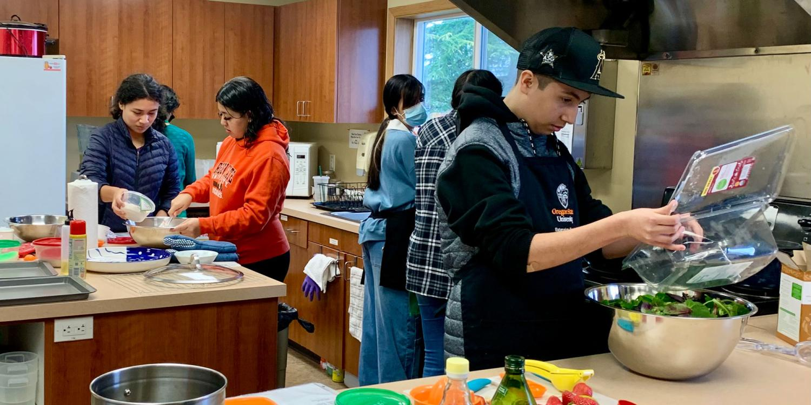

Modern Nutrition
Learn about making healthy food choices in a world of convenience foods, meal delivery apps, and social media diet trends.

Preparing simple, nutritious meals helps fuel your growing body
Nutrition in the Digital Age
As a teen, you're growing rapidly and need proper nutrition to fuel your body and brain. Yet today's food environment presents unique challenges, from fast food availability to conflicting nutrition advice online.
Teen Nutritional Needs
Teens need more calories and nutrients than at any other time of life except pregnancy. Your body requires proper fuel for growth, brain development, and physical activity.
Smart Nutrition Strategies
Navigate today's food environment with these practical approaches:
- Focus on whole foods over processed options
- Keep healthy snacks accessible
- Learn to read nutrition labels
- Practice mindful eating (no screens during meals)
- Stay hydrated with water instead of sugary drinks
- Prepare simple meals at home when possible
Quick Meal Ideas
Busy teen life doesn't have to mean unhealthy eating. Try these quick, nutritious options:
- Yogurt parfait with fruit and granola
- Whole grain toast with avocado and egg
- Veggie and hummus wrap
- Smoothie with fruit, yogurt, and spinach